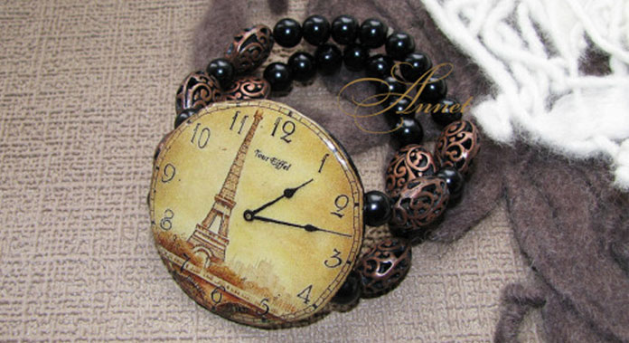
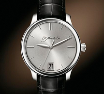
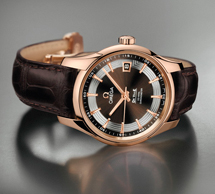

In time

066 12 577 654
Заголовок H1 Новая коллекция ручных часов
Наручные женские часы не только необходимость знания времени, но и элемент имиджа, предмет гордости, и украшение! Для женщин стало престижно иметь не одни часы, а несколько. Они ведь, несомненно, должны сочитаться с Вашим нярядом. Сплошная элегантность и роскошь, браслет и корпус инкрустированы стразами, застежка простая.
Они ведь, несомненно, должны сочитаться с Вашим нярядом. Сплошная элегантность и роскошь, браслет и корпус инкрустированы стразами, застежка проста, удобна в применении.
Заголовок H3
Наручные женские часы не только необходимость знания времени, но и элемент имиджа, предмет гордости, и украшение! Для женщин стало престижно иметь не одни часы, а несколько. Они ведь, несомненно, должны сочитаться с Вашим нярядом. Сплошная элегантность и роскошь, браслет и корпус инкрустированы стразами, застежка простая.
Заголовок H4
 
Часы должны сочитаться с Вашим нярядом. Сплошная элегантность и роскошь, браслет и корпус инкрустированы стразами, застежка простая:
- Модные женские часы в 2013 году!
- Самый модный цвет 2013 года!
- Часы женские с керамикой
Наручные женские часы не только необходимость знания времени, но и элемент имиджа, предмет гордости, и украшение! Для женщин стало престижно иметь не одни часы, а несколько.